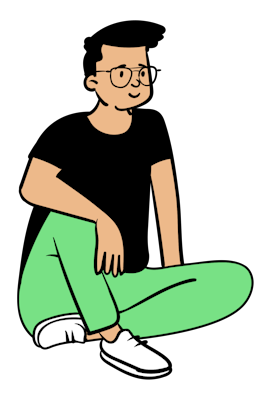

“I left school thinking marks were everything I’d need.”
Two years of cramming. Optimizing for grades. Doing what was expected. The system rewarded it, so I did it. Then the exams ended — and for the first time, nobody was telling me what to learn next.
That gap is where this story starts.
Python came first. Calculators, simple scripts — the satisfaction of understanding what was underneath rather than just using the surface. Then DBMS. Then data structures. The more I understood, the more I needed to understand.
Then I found Attention Is All You Need.
I didn’t fully understand it the first time. I read it again. The math confused me — how do matrices, the same ones from my textbook, produce something that feels like human thought? That question didn’t have a clean answer. It still doesn’t, really.
But it quietly changed how I spent every hour after that.
My first real project was a license plate detector built with OpenCV. Not because someone assigned it — because I wanted to see if I could. It wasn’t polished. The edge cases were everywhere. But finishing it felt different from a good grade on an exam.
Something had actually worked, in the world, because of decisions I made.
“That feeling became the thing I started chasing.”
Around this time, my mom started bringing me problems. Not academic ones. Real ones.
Could I build something that automates report card creation? Something a teacher could use with a click, without needing to understand how it worked?
Then: the CBSE gazette analyzer. Every exam season, the board releases results as raw text files — inconsistent, messy, full of subject-code variations that change year to year. The tool parsed all of it, ran the analytics, and produced clean Excel and PDF reports automatically.
What looked simple from the outside took real work to get right. When teachers at two schools used it during their Class X final exams — analyzing results for 600 students combined — and reached out to say it saved them hours, that landed differently than any mark ever had.
From there the projects kept coming — computer vision, full-stack systems, ML pipelines, frontend design, small physics simulations. Each domain left a question that the next project tried to answer.
Agents were the question that stuck longest.
At first they seemed like sorcery. Systems that figure things out on their own. After building five or six of them, the magic wore off and the engineering became visible — messy, fascinating, largely unsolved engineering.
The frustration of watching agents break every time a new tool was added became the motivation for Smith. A runtime that compiles natural language into a deterministic execution graph. No improvisation. No hidden loops. No guessing what the agent decided to do.
Four months. Four major versions. Voice mode, long-term memory, a fabrication guard that prevents the system from making things up. Fifteen tools. And an architecture that’s still evolving.

“Somewhere along the way, the belief
that marks were everything quietly dissolved.”
Not because grades stopped mattering. But because something replaced them — the specific satisfaction of building something that works for someone who needed it.
That’s what drives the next project. And the one after that.